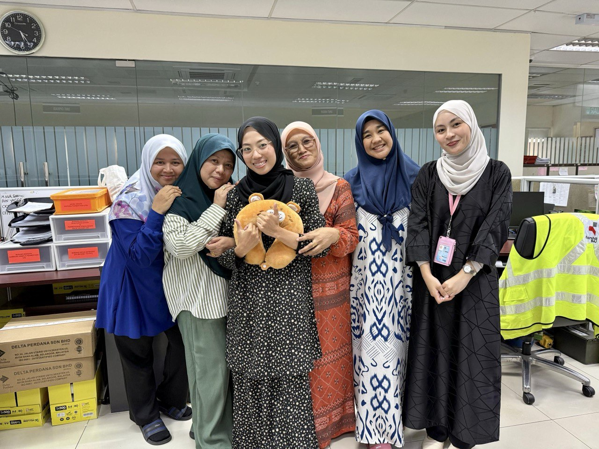
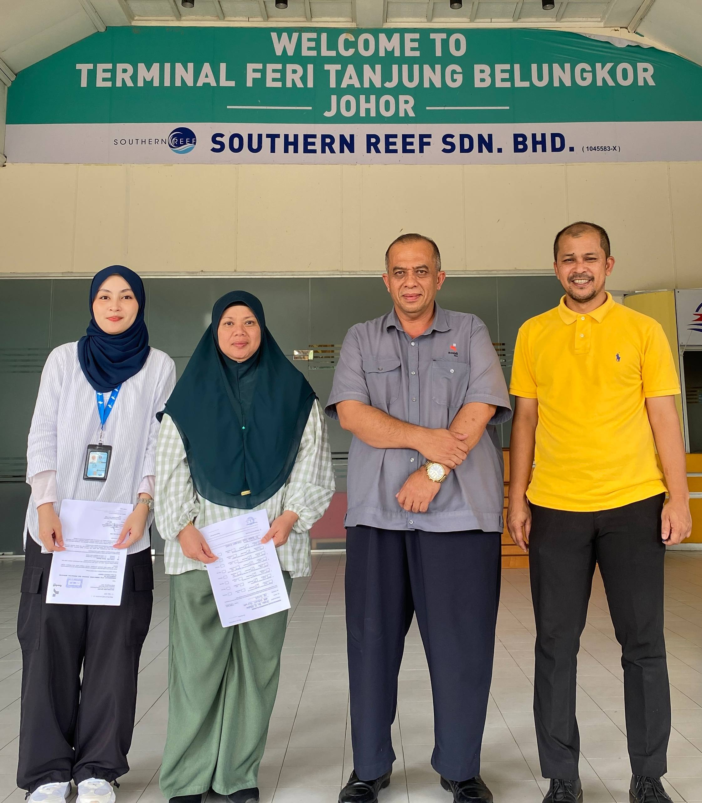
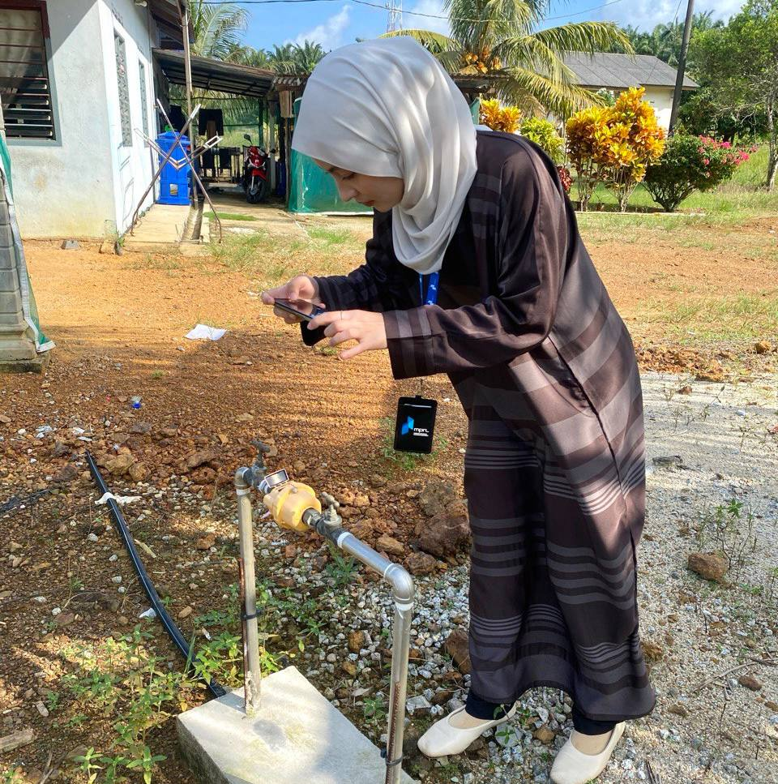
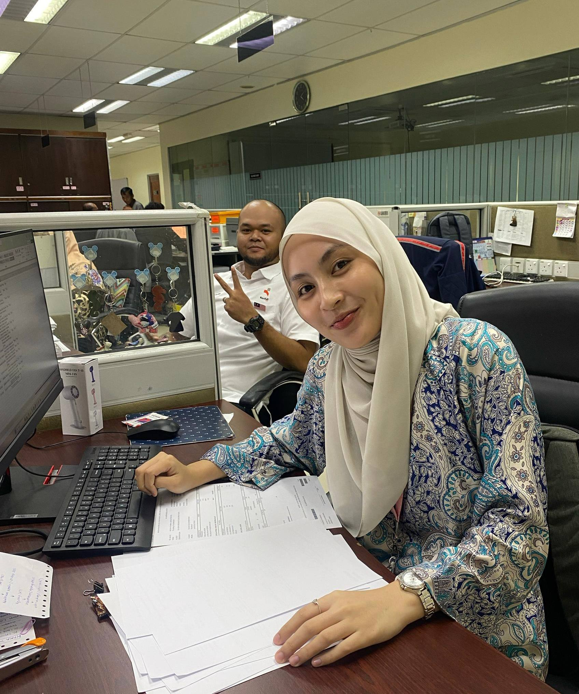
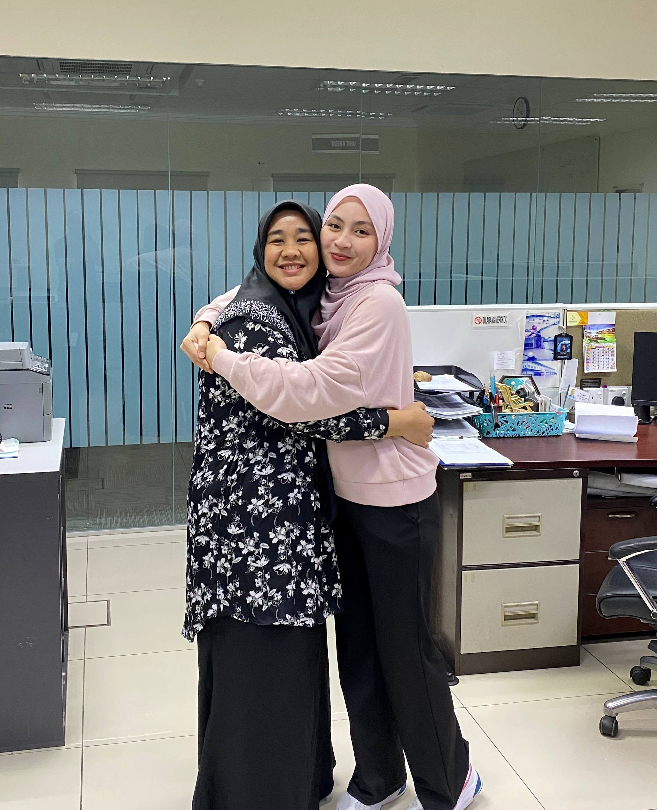

During my internship at Ranhill SAJ Kota Tinggi, I gained practical experience
in customer service operations and administrative support within a utility service environment.
Key Responsibilities :
• Handled customer inquiries and complaints related to water services.
• Assisted customers with bill payments and account-related matters.
• Managed customer records and supported daily office administration.
Skills Gained :
• Customer service and effective communication skills
• Problem-solving and complaint handling
• Time management and teamwork
• Basic administrative and data management skills
Experience Gallery

Customer Service team

Site Visit in Pengerang

Site Visit - Check the water meter

Prepare a notice letter for the customer

My Favourite SAJ staffLarian seribu langkah